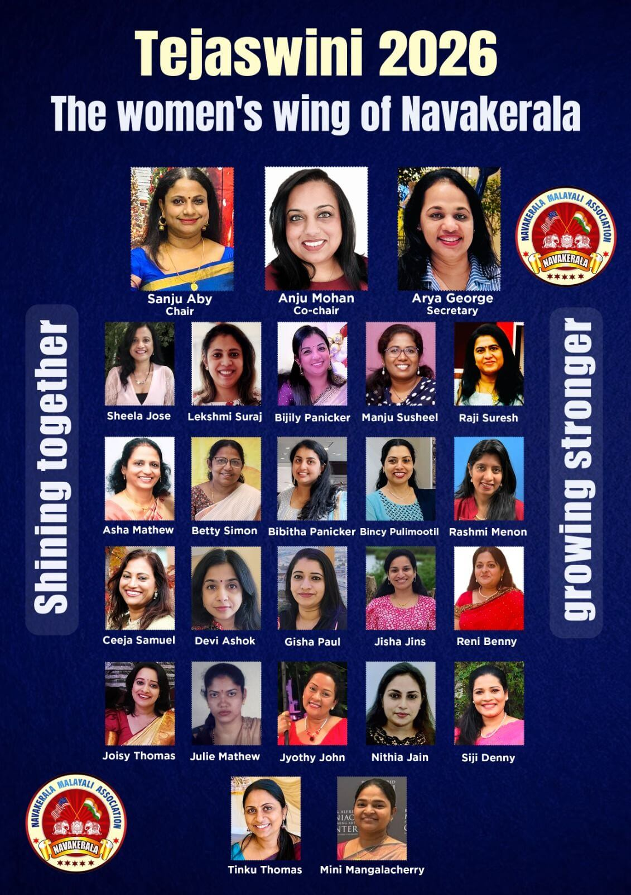

Shining Together, Growing Stronger
Empowering women, building community, creating change
Tejaswini, meaning "radiant" or "brilliant" in Sanskrit, is the women's forum of Navakerala Malayali Association Inc. We are a vibrant community of women who come together to celebrate our heritage, support one another, and make a positive impact in our community.
Founded with the vision of creating a supportive space for women of all ages, Tejaswini serves as a platform where women can connect, share experiences, develop new skills, and grow together. We believe that when women support each other, incredible things happen.
Building a strong network of women who uplift and encourage each other through life's journey.
Providing opportunities for personal growth, skill development, and leadership training.
Giving back to our community through charitable initiatives and volunteer activities.

Events and programs for women, by women
Special gatherings, celebrations, and social events designed to bring women together in a fun and supportive environment.
Educational sessions on health, wellness, finance, career development, and personal growth topics.
Celebrating our Kerala heritage through dance, music, art, and traditional activities.
Organizing drives and fundraisers to support causes that matter to women and families in need.
Programs focused on physical and mental well-being, including yoga sessions, health talks, and wellness retreats.
Connecting women professionals, entrepreneurs, and homemakers to share experiences and opportunities.
Are you a woman looking to connect with fellow Malayali women in South Florida? Join Tejaswini and be part of a supportive community that celebrates, empowers, and uplifts each other.
Whether you're new to the area or have been here for years, there's a place for you in our sisterhood. Together, we shine brighter!